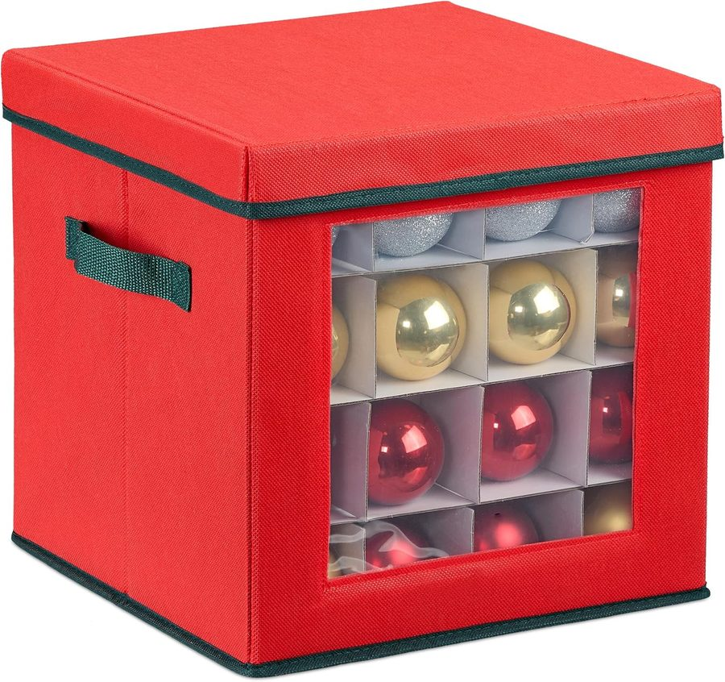

Hasta 50 €64 adornos
Relaxdays, caja de 30 cm para 64 adornos
Una caja cúbica de 30 × 30 × 30 cm, en rojo y verde, de forro polar y cartón, con tapa, espacios ajustables para 64 adornos y un asa para llevarla. La ficha la presenta como organizador resistente para varios tipos de adornos, no solo bolas. Es la opción más asequible de las dos. Según la ficha, la envía Amazon y el vendedor es ferocity-shop. Entrega anunciada el jueves 19 de noviembre; aparece también una opción más rápida para el 16 de noviembre.
23,99 €Amazon.es · envíos de Amazon Fulfillment · entrega anunciada el jueves 19 de noviembre · en stock
Material declarado: forro polar y cartón. 64 espacios ajustables. Medidas: 30 × 30 × 30 cm.